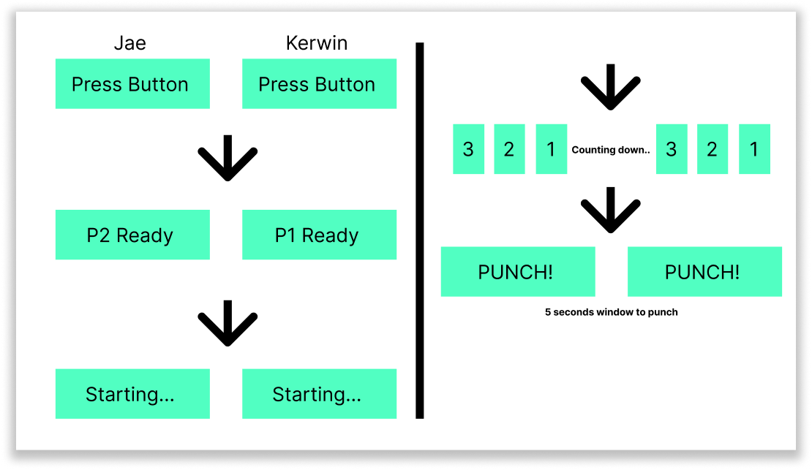
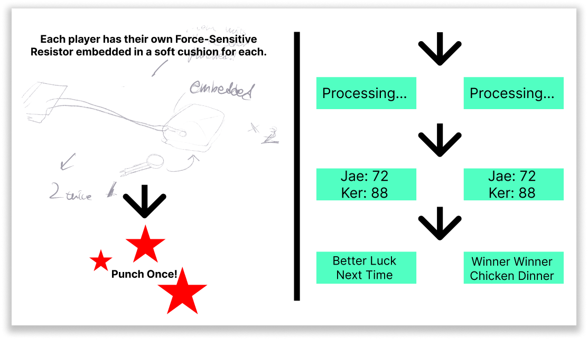
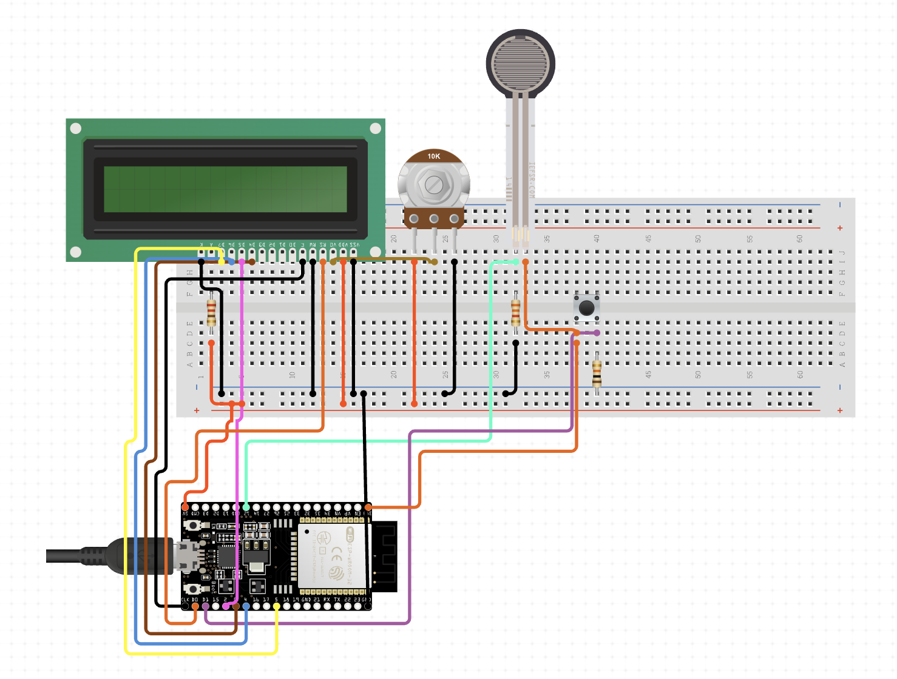
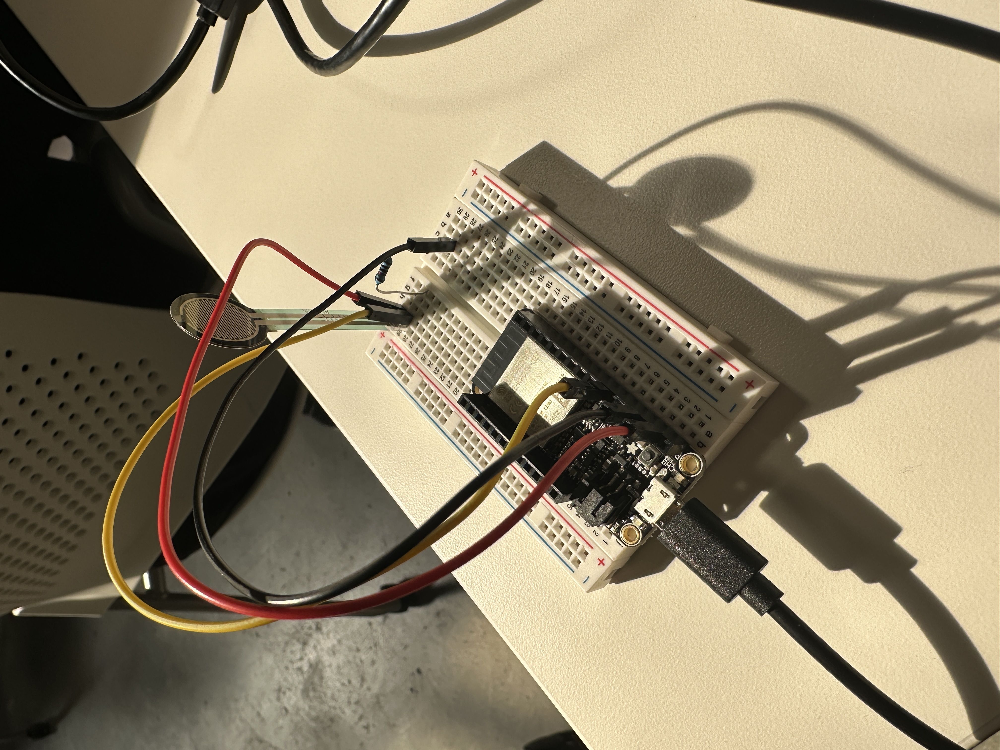
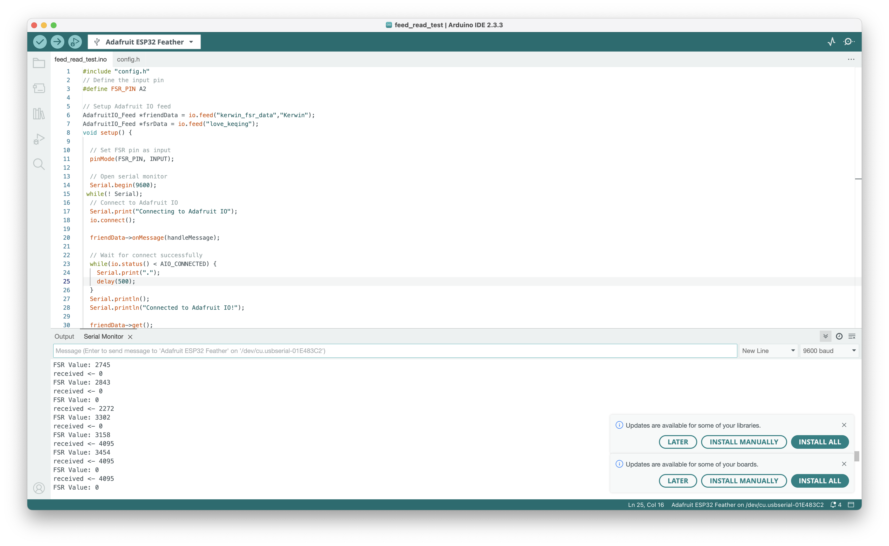
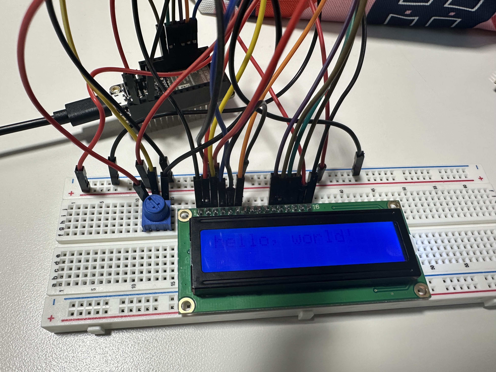
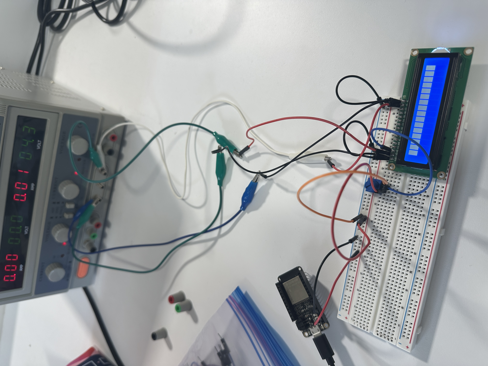
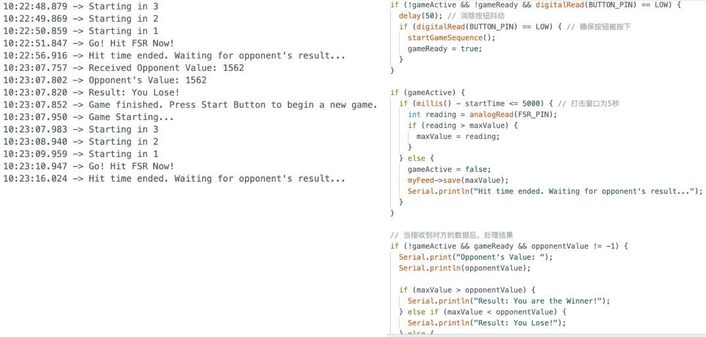
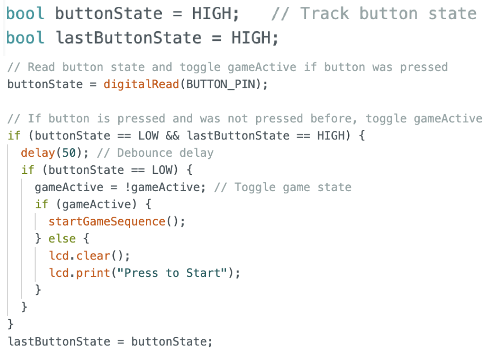
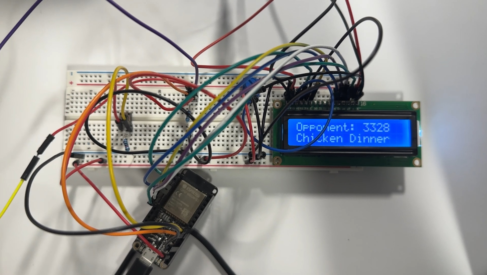

Punching Game is a game inspired by traditional arcade boxing games. Players compete by using "strength" as the input element, striking to determine the winner. Each player’s creature collects the pressure applied by the player on the FSR sensor and exchanges data with the opponent through the cloud (via Adafruit IO). The creatures compare both players' data to decide the winner. Throughout the game, players' actions and data transmissions are connected in real-time and synchronized over the network, allowing players to complete the game in different environments.
Diagramming


Once the system detects that a button has been pressed, the system advances the game to the ready phase.After a three-second countdown, the creature provides players with a five-second window to strike. Theoretically, players can strike multiple times within this period, but the system will only upload the maximum value recorded during these five seconds to Adafruit IO. Once the window closes, each creature exchanges data with the opponent via Adafruit IO and compares the values in the background to determine the winner.
The diagram above shows how the actual circuit is connected, including the ESP32, LCD display, FSR, potentiometer (used to control the display's brightness), buttons, and some resistors (used to stabilize the voltage).
Process Documentation


First, we tested the most basic yet core functionality of the game system: uploading and receiving data via Adafruit IO. Since both of us used our individual feeds, a few key points included ensuring that both feeds were set to public and entering the correct feed names and usernames in the code.
The next challenge we encountered in this project was powering the LCD. Through our testing, we found that with an Arduino Uno board, the 5V output could reliably power the display and simultaneously support other components like the FSR sensor. However, since we’re using the ESP32, the 3.3V output proved insufficient for the LCD display. For instance, RGB displays could only light up the backlight, while monochrome displays, as shown in the image, could only display characters with very low brightness.
One potential solution is to use an additional power unit like the BBP-32701 to separately supply power to both the ESP32 and the display. This approach would ensure the safe operation of the ESP32 while also providing adequate power for the display. However, we currently don’t have this power unit on hand, and it would require a 9V power adapter. I then thought of the adjustable external power source I used in my first project, which should be the simplest solution for this situation. The only key requirement is to ensure that the display and ESP32 share a common ground connection.
Before resolving the display issue, we used the Serial Monitor as a substitute for the LCD display to test the entire game flow. As previously described, we controlled the overall game process primarily using if-else statements. Additionally, we defined some initial game states to ensure that the game could start and end correctly. At this stage, one unresolved issue is that the button does not successfully control the game start. Once the code is uploaded to the ESP32, the game flow automatically begins and continues in a loop without waiting for button input.
To fix the button control logic, we defined "current state" and "previous state" for the button. In simple terms, the code initiates the game loop by checking if the current state differs from the previous state. If they are different, it indicates the button has been pressed, and the game begins; if they are the same, it indicates the game is either ongoing or has ended. With this setup, players can start or restart the game at any time by pressing the button, meeting the requirement for both players to start and play the game synchronously.
Finally, by integrating the LiquidCrystal library, we were able to display all necessary characters on the LCD screen, completing the entire setup for the game entity.